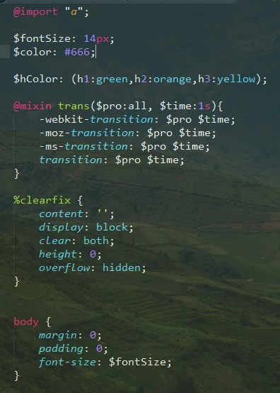

Sass练习巩固
Sass的主要功能有变量，嵌套，混合和继承。
Sass有两套语法规则，一套是scss类似于css的写法，另外一套与scss的区别在于不用 ； {}

%是占位选择器，没有被继承调用的时候是不会有多余的CSS代码的。
如果变量为属性的话，要以这种形式使用 # {$XXXX}
混合： @mixin声明混合，以@include进行调用
混合可以无参数，单个单数和多个单数，但是每个参数必须先给默认值，不然转化的时候会报错。
待研究：scss里面写注释转化为css的时候报错
解决方法: 在scss文件顶部加上@charset "utf-8";这句代码就ok了
Sass编译